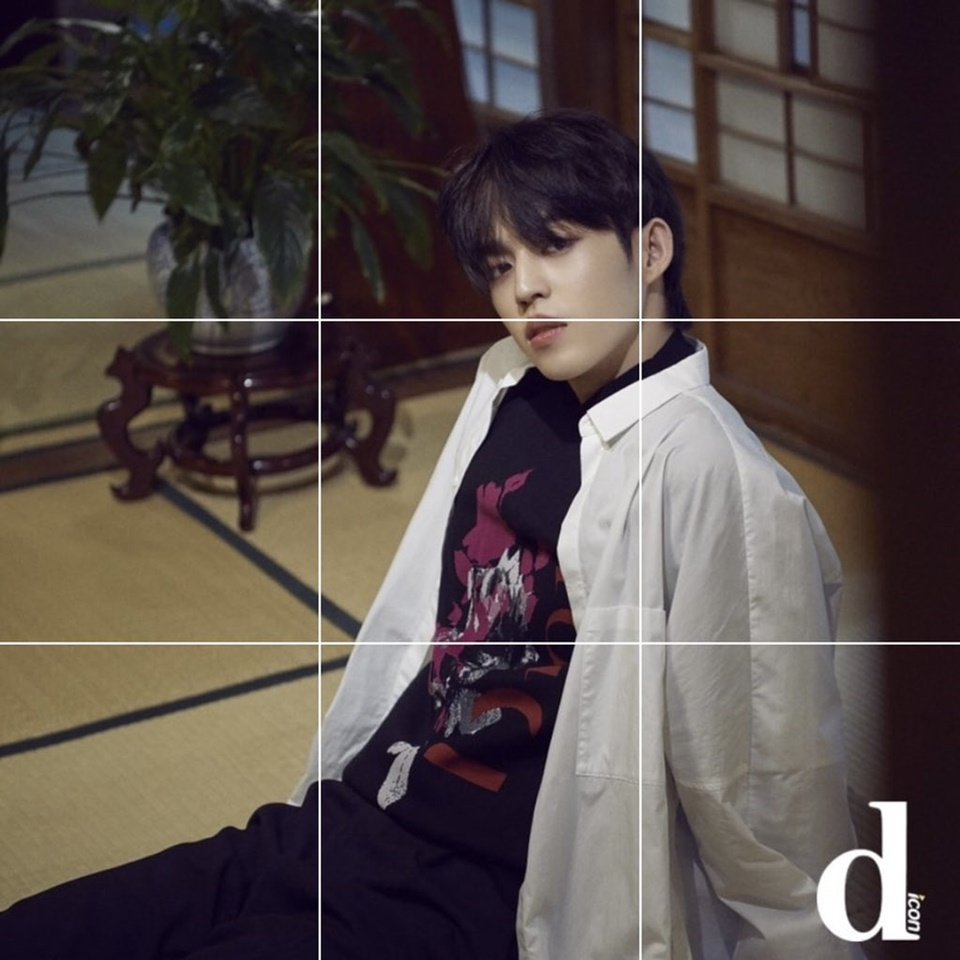
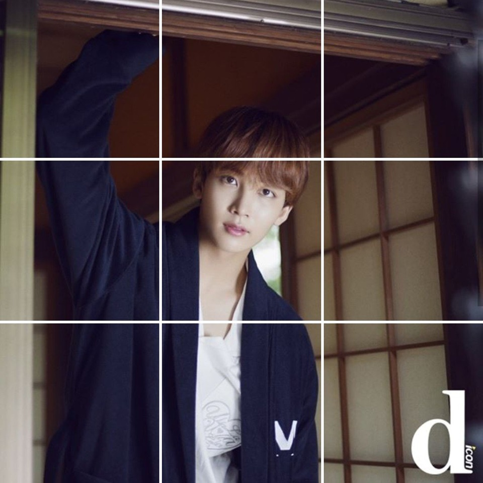
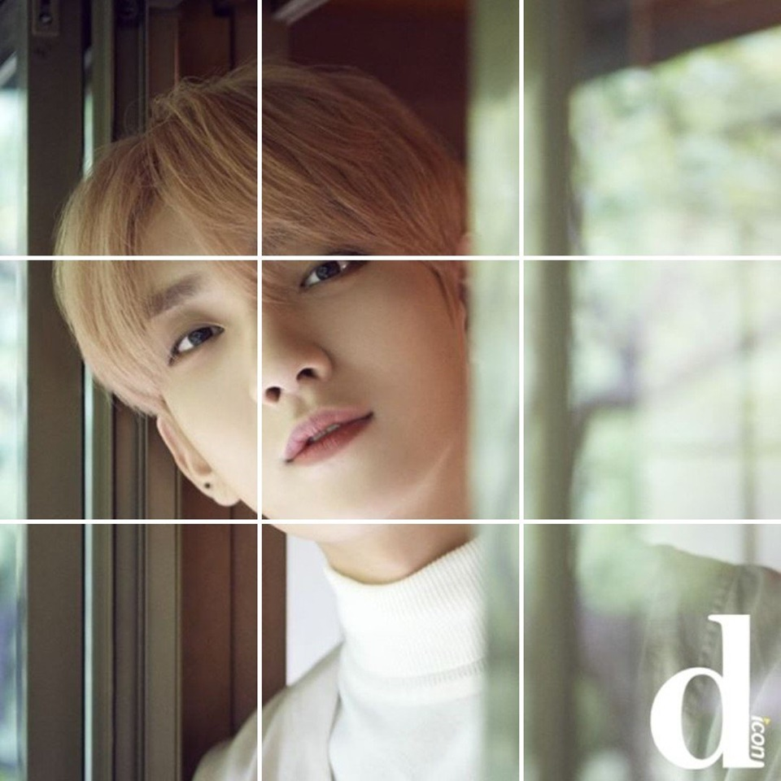
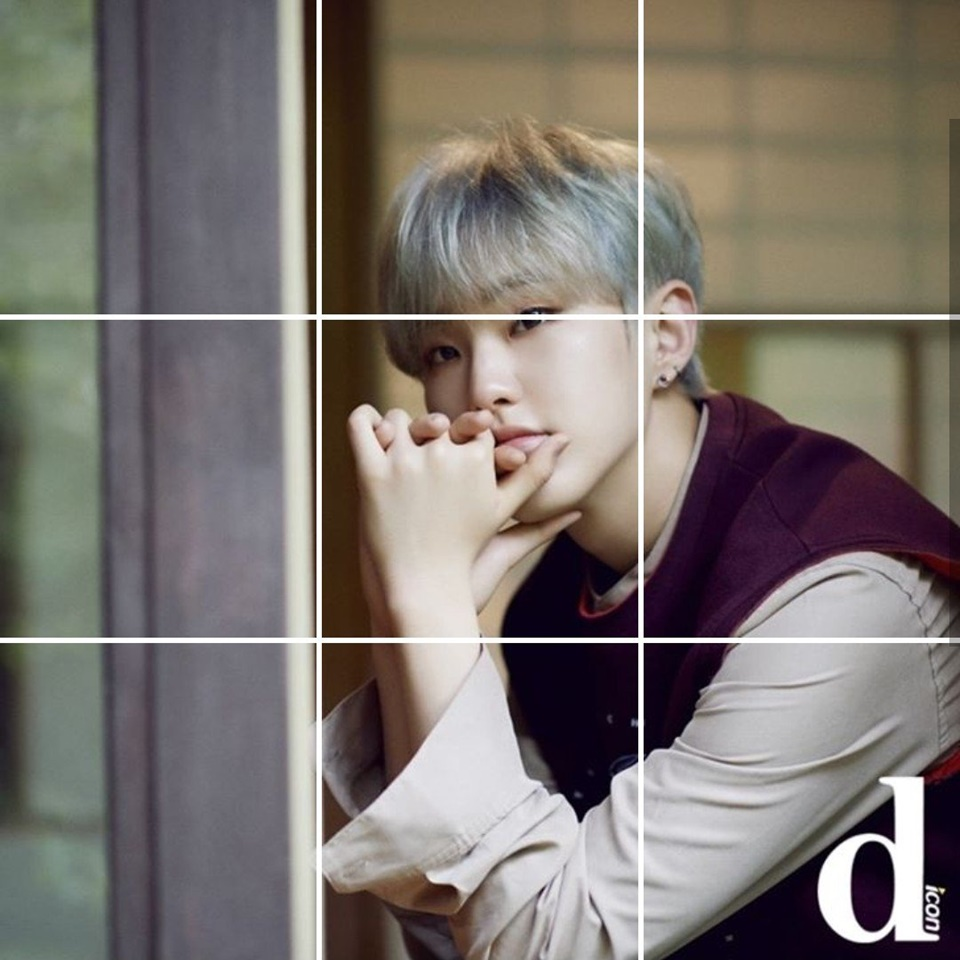
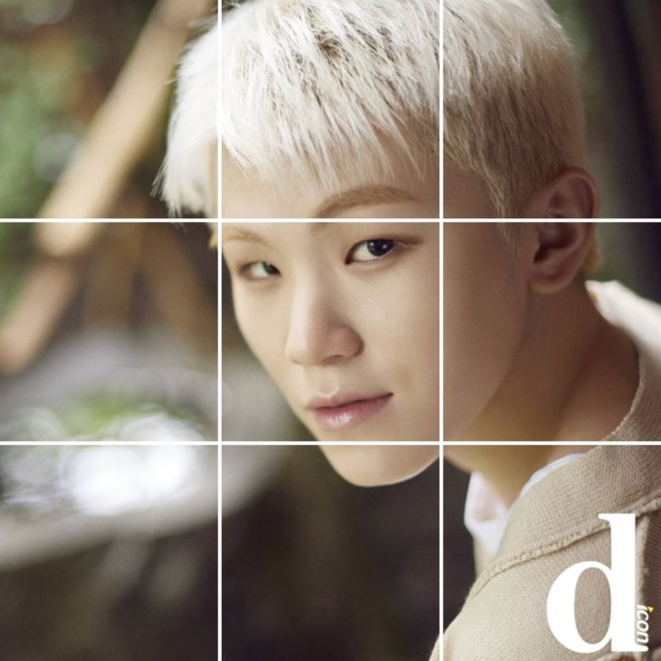
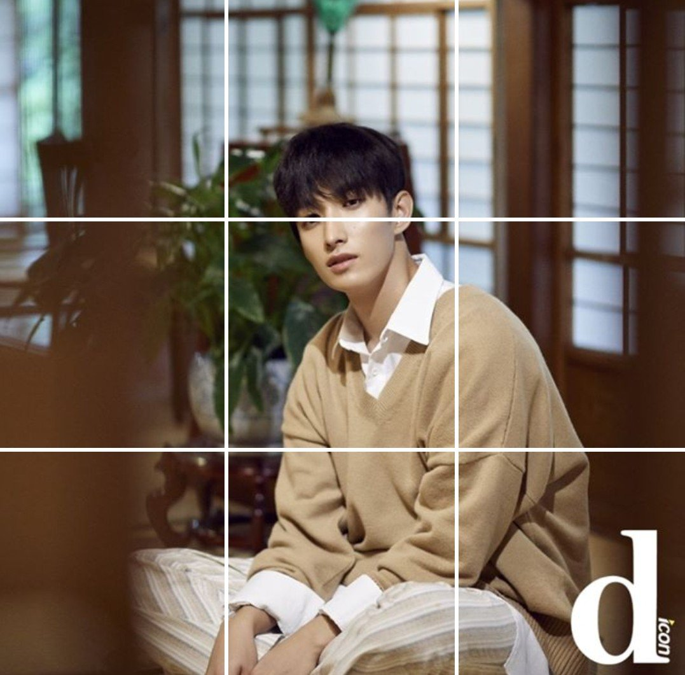
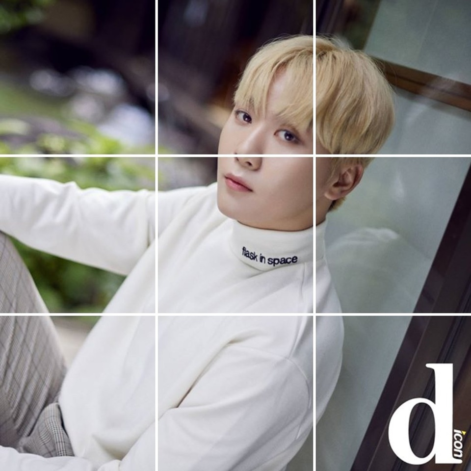
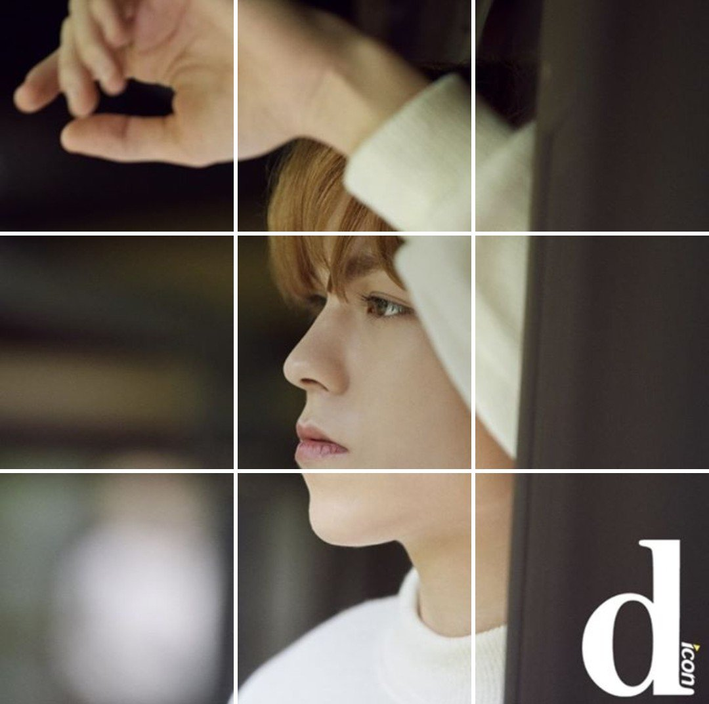

       
[D아이콘] 에스쿱스 A컷_2018.11.09 Open
— Dicon_SVT (@Dicon_svt) 2018年11月8日
📸 koreadispatch Instagram
.#세븐틴 #SEVENTEEN #セブンティーン #SVT #Dicon #디아이콘 #에스쿱스 #Scoups #エスクプス #최승철 #디스패치 pic.twitter.com/HzSN8zk8Vx
[D아이콘] 정한 A컷_2018.11.18까지
— Dicon_SVT (@Dicon_svt) 2018年11月9日
📸koreadispatch Instagram
.#세븐틴 #seventeen #svt #セブンティーン #정한 #윤정한 #Jeonghan #ジョンハン #디스패치 #디패 #디아이콘 #dispatch #megazine #Dicon pic.twitter.com/MpDSYe5TLM
[D아이콘] 호시 A컷_2018.11.18까지
— Dicon_SVT (@Dicon_svt) 2018年11月9日
koreadispatch Instagram
.#세븐틴 #seventeen #svt #セブンティーン #호시 #hoshi #ホシ #권순영 #디스패치 #디패 #디아이콘 #dispatch #megazine #Dicon pic.twitter.com/2GSmu1kxOi
[D아이콘] 조슈아 A컷_2018.11.18까지
— Dicon_SVT (@Dicon_svt) 2018年11月10日
📸 koreadispatch Instagram
.#세븐틴 #SEVENTEEN #セブンティーン #SVT #Dicon #디아이콘 #조슈아 #Joshua #ジョシュア #홍지수 #디스패치 #디패 #Dispatch #megazine pic.twitter.com/z6QycFJmzV
[D아이콘] 도겸 A컷_2018.11.18까지
— Dicon_SVT (@Dicon_svt) 2018年11月10日
📸 koreadispatch Instagram
.#세븐틴 #SEVENTEEN #セブンティーン #SVT #Dicon #디아이콘 #도겸 #DK #ドギョム #이석민 #디스패치 #디패 #Dispatch #megazine pic.twitter.com/IsjTulBNWQ
[D아이콘] 승관 A컷_2018.11.18까지
— Dicon_SVT (@Dicon_svt) 2018年11月11日
📸 koreadispatch Instagram
.#세븐틴 #SEVENTEEN #セブンティーン #SVT #Dicon #디아이콘 #승관 #SeungKwan #スングァン #부승관 #디스패치 #디패 #dispatch #megazine pic.twitter.com/dyvzkmKFzh
[D아이콘] 우지 A컷_2018.11.18까지
— Dicon_SVT (@Dicon_svt) 2018年11月11日
📸 koreadispatch Instagram
.#세븐틴 #SEVENTEEN #セブンティーン #SVT #Dicon #디아이콘 #우지 #woozi #ウジ #이지훈 #디스패치 #디패 #dispatch #megazine pic.twitter.com/Cq6qqsNvnw
[D아이콘] 버논 A컷_2018.11.18까지
— Dicon_SVT (@Dicon_svt) 2018年11月12日
📸 koreadispatch Instagram
.#세븐틴 #SEVENTEEN #セブンティーン #SVT #Dicon #디아이콘 #버논 #vernon #バーノン #최한솔 #디스패치 #디패 #dispatch #megazine pic.twitter.com/hvPdu9Gyib